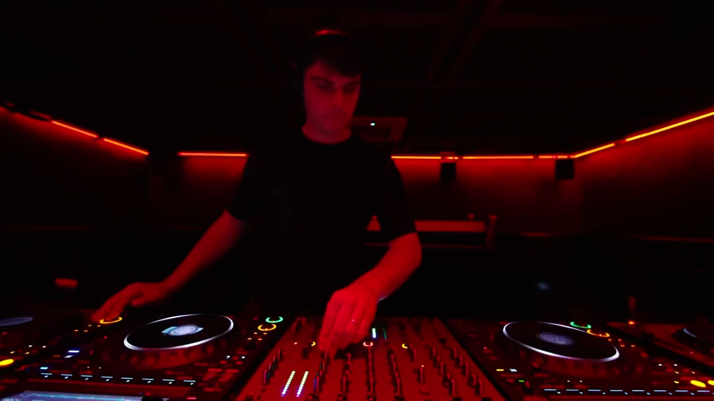
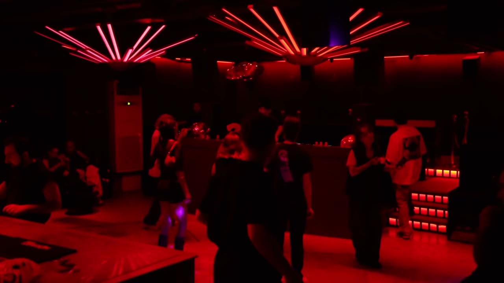
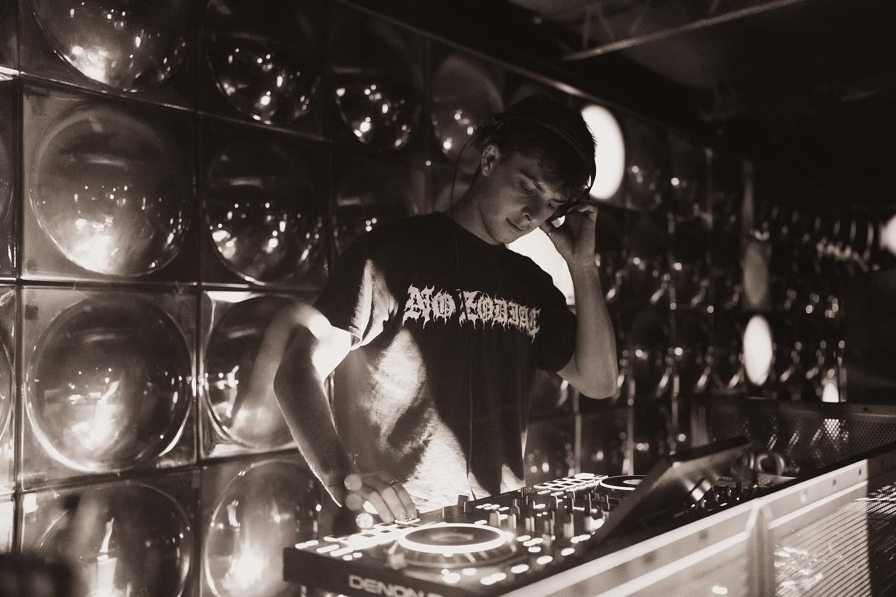
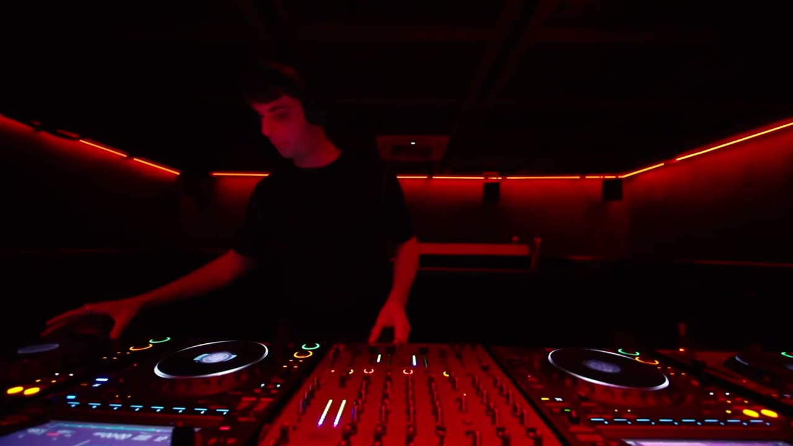
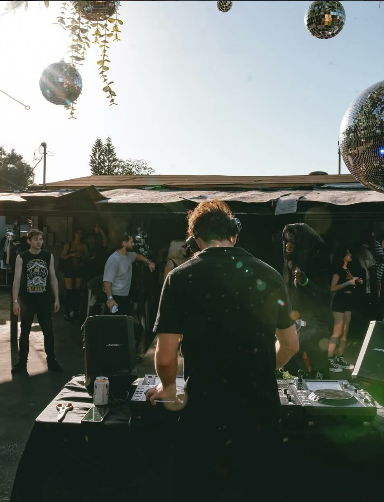

Ryan R, Brooklyn DJ
Atlanta-raised, Brooklyn-based DJ.Hypnotic techno · Hard groove · Electro · Leftfield house
For the people dancing.
Ryan Redick plays as Ryan R: an Atlanta-raised, Brooklyn-based DJ rooted in the underground, blending hypnotic techno, hard groove, leftfield house, electro and trance into powerful, percussive sets.
Played
On air
- Sector FM
- AR Radio

EKO, Brooklyn.
Photo: EKO
Live, New York
Ryan R
Press and hold to build the track up to a whiteout, then let go for the drop.